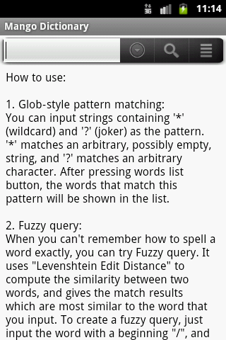
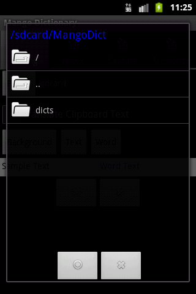
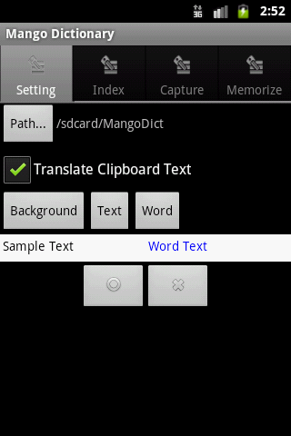
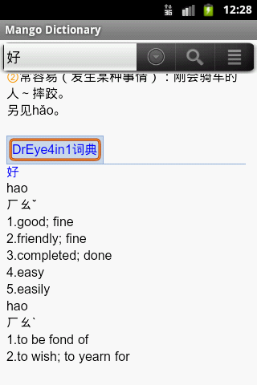
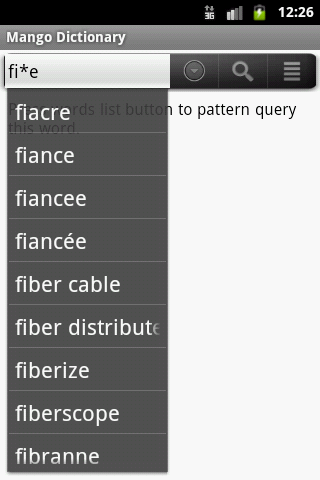
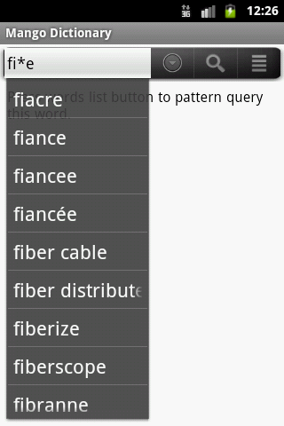
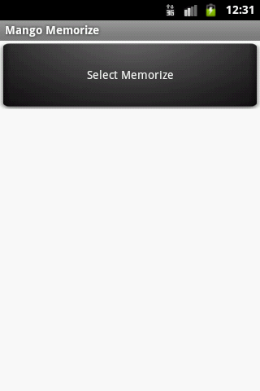
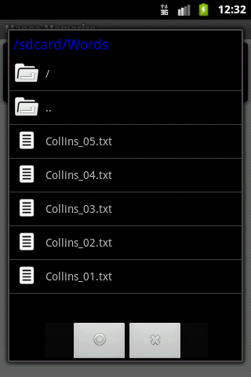
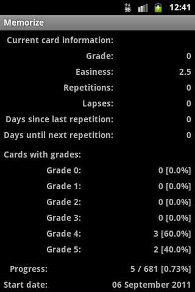

芒果詞典用戶手冊 |
||
| 項目: https://github.com/zhanweiwu/mangodict/ EMail: jeffrey.wuzw@gmail.com MSN: wingfancy@hotmail.com 作者: 吳占偉(Zhanwei Wu) |
English 簡體中文 繁體中文 |
|
| 這是一個開源的Android詞典應用程序，這個應用支持所有&
ldquo;stardict”格
式的詞典。 芒果詞典有兩個主要的功能: A. 芒果詞典： 您可以用芒果詞典查詞。本應用支持所有& ldquo;stardict”格式的詞典。 在如下網站有近千本各類“stardict”格式的詞典可供免費下載: 下載詞典 如果您無法下載這些詞典，請聯繫我。 B. 芒果記憶： 您可以使用芒果記憶功能來幫助您記憶單詞。 本應用使用 SM2 算法來幫助您更容易地記憶單詞。 芒果詞典支持三種查詢方式： “通配符匹配”，“模糊查詢” 和“全文檢索”。 在使用本應用前，您手機中必須有SD卡用於存放詞典文件及相關數據信息。 A. 芒果詞典: 啟動應用後，在第一個界面，您可以看到一些詞典查詢相關的幫助信息。  選擇“設置”菜單項進入設置界面可以進行相關設置。 
  首先，您需要減壓縮您下載的“stardict”格式的詞典文件，並將這些詞典文件放到SD卡上相應文件夾中。 例如，您可以將詞典放到如下路徑的文件夾中：“/sdcard/MangoDict/dicts” ，請參考如下圖片（所有的詞典必須放到名為“dicts”的子目錄中）：  現在在設置界面，您可以選擇“路徑...”按鈕以選擇詞典所在路徑。您應該選擇“ /sdcard/MangoDict”作為您的詞典所在路徑，而不是“ /sdcard/MangoDict/dicts” ，請參考如下圖片：
 在設置界面，您可以開啟或關閉“剪切板內容取詞”功能。如果開啟了這個功能，當您的手機的剪切板內容變更時，會 彈出一個查詞窗，此窗口會自動根據剪切板內容查詢詞典並顯示查詢結果。   在設置界面，您可以選擇“背景顏色”、“文本顏色”及& ldquo;單詞顏色”按鈕以設置 詞典主界面的背景色，文本顏色及單詞顏色。“單詞顏色”指您所查詢的單詞在查詢結果中所顯示的顏色。如下圖片展 示了不同顏色設置 所得到的不同效果： 
 在設置界面，您可以選擇“索引”、“取詞”或“ 記憶”標籤來切換設置界面。 1. “索引”用來設置在詞典主界面查詞時所使用的詞典。 2. “取詞”用來設置在“剪切板內容取詞”界面查詢時所使用的詞典。 3. “記憶”用來設置在“芒果記憶”中顯示相應單詞結果所使用的詞典。 在這些界面，您可以點擊右邊的選擇框選擇詞典；您可以點住詞典名稱進行拖動來改變詞典的先後順序。然後點擊“圓圈& rdquo;按鈕來保存當前的設置。     在詞典主界面，您可以在輸入框中輸入單詞來進行查詢，輸入單詞後會彈出一個相關單詞的列表，您可以單詞列表中選擇一個合適的單詞來進行查詢，查詢結果將被 顯示在正文內容窗口中。如果您在詞典設置中選擇了多個詞典，所有詞典的查詢結果將會顯示出來，並且詞典名稱會被顯示在詞典內容的上方。您可以點擊詞典名稱 以收起或展開詞典內容，以方便查看。 在這個界面上的第一個按鈕用來顯示之前的相關單詞列表；第二個按鈕用來查詢輸入框中的單詞；第三個按鈕用來根據輸入框中的單詞重新查詢單詞列表。 
 如下圖片是對漢字查詢的結果示例： 
  如果您使用 “通配符匹配”，“模糊查詢” 和“全文檢索”，由於查詢需要較長時間，會彈出一個進度框以顯示當前查詢進度，查詢結束結果會顯示在彈出的單詞 列表中，您可以從 此列表中選擇您需要的單詞。  
在菜單中的“播放單詞”菜單項可以顯示一個播放對話框，在此對話框中，您可以播放當前輸入框中的單詞（目前只支 持播放英語），您也可以錄下您的聲音以便於比較您的發音是否正確。 在菜單中的“播放剪切板內容”可以播放目前在剪切板中的內容。
 “增加生詞”菜單項可以增加當前在輸入框中的內容到“生詞表”中； “歷史記錄 ”菜單項可以顯示查詢過的單詞列表；“生詞表”菜單項可以顯示您通過& ldquo;增加生詞”加入的生 詞。您可以從單詞列表中選擇單詞直接進行查詢。  “頁內查找”菜單項可以顯示一個工具條讓您可以在當前查詢結果中查詢相關單詞。
 B. 芒果記憶: 首先，您需要在詞典設置中對“記憶”設置項中的設置進行設置，這些詞典將在“芒果記憶 ”中用於顯示單詞結果。 再則，您需要準備用於記憶的單詞列表。單詞列表就是一個普通的文本文件，其中列表中您需要記憶的單詞，在文件中每個單詞占一行。 如下連接是幾個列表，這些是“柯林斯星級單詞”，共分五級，您可以下載使用。 Collins_01.txt Collins_02.txt Collins_03.txt Collins_04.txt Collins_05.txt 現在您可以進入“選擇課程”界面，點擊第三個按鈕選擇您準備好的單詞文件（這些單詞文件必須放在SD卡上）。     選擇完成後，會在“選擇課程”界面顯示這個課程，您可以選擇這個課程進行記憶了。   記憶過程中，先顯示單詞，您需要花點時間想一下您對這個單詞的熟悉程度，再點擊“顯示結果”按鈕顯示單詞結果， 然後反饋您對這個單詞的熟悉程度。程序會根據您的反饋計算下次您對這個單詞進行再次記憶的日期。 
  “計劃卡片”菜單項讓您記憶計劃中需要記憶的單詞；“新卡片”菜單項 讓您選擇新的單詞進行記憶；“舊卡片”菜單項讓您記憶已經記憶過的單詞。 
 “計劃”菜單項讓您可以查看當前的記憶計劃，這些計劃是由程序自動計算出來的。  “統計”菜單項讓您查看統計信息，包括當前單詞的信息，不同熟悉程度的單詞個數及百分比，當前記憶進度及開始記 憶的日期。
通過“設置”項可以對一些參數進行設置。
 |